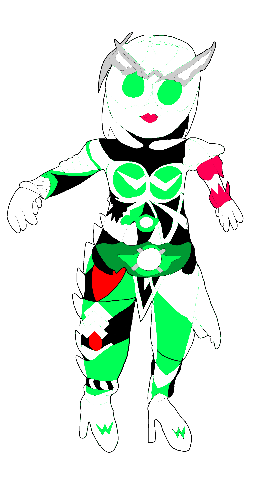

異形の者
- Sallowed by desire【知識欲】小翠智永子
- 大学に所属していた過去を持つ緑の一族の女性。知識欲に呑まれかけている彼女の姿。


欲望に呑まれし者
グリーダー / Greeder
抑えきれない渇望に身を任せ、精神が内側から作り替えられた姿。 何かに執着し、それを求め続ける「飢え」が鋭利なシルエットとなって現れている。 左右で異なる瞳は、理性が欲望に浸食された証である。
「……足りない。もっと、識らなければ。」
[ NO IMAGE: ADDICTOR ]
力に溺れし者
アディクター / Addictor
手にした強大な力に魅了され、自己を失った姿。 制御を失ったエネルギーの奔流に身を焼き、ただ破壊衝動のままに突き進む暴走体。
「力が……溢れて……止まらない……！」

融合超人
ミクスタス / Mixtus
欲望の化身「グリーダー」と、力の化身「アディクター」が重なり合い、一つに溶け合った究極の個体。
「欲望と力、その全てを私は統べる。」